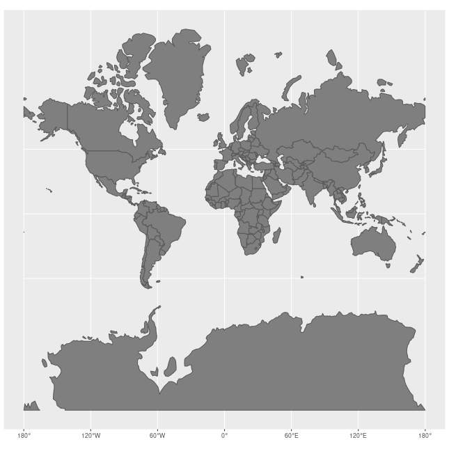

Chartwork and Pilotage
Definitions
Longitude: an anglular measurement which is based off of the Prime Meridian. Meridians of longitude run 'vertically' between the north and south pole, but represent distances either east or west of the prime meridian. The distance between lines of longitude will change depending on the latitude (ie. distances between meridians at the equator will vastly differ from distances between meridians at the polar latitudes). All lines of longitude are considered great circles. (wikipedia)
Latitude: a geographic representation of position north or south of the equator. Lines of latitude run 'horizontally' but measure north and south, and are called parallels as opposed to angular measurements because they run parallel to one another measuring northerly or southerly positions. Parallels of latitude (other than the equator) are not great circles because they do not pass through the center of the earth. Latitude is used in chartwork for measuring distances because there is no chart distortion in distance when working with mercator charts. (wikipedia)
demonstration of a great circle
all of the curved lines on this diagram are meridians and great circles
Rhumb Line: a line that cuts across all meridians at the same angle and maintains a constant true direction. Using the Mercator projection, rhumb lines appear as straight lines. To follow a true heading in a straight line irregardless of the meridians is to follow a rhumb line course. If you drew a rhumb line from one pole and followed it all the way to the other, it would form a spirallic loxodrome. (wikipedia)

Mercator Chart: the standard kind of map that is used almost universally because of its simplicity for navigating in small areas. The mercator map represents the world as if it were a rectangular shape rather than a spherical one, and thereby distorts areas at extreme latitudes (this is why antarctica appears giant on world maps), making them appear much larger than they actually are. The mercator chart is straightforward for navigation because drawing a straight line between two points will give a direction to follow to get to your destination. On larger scale maps, this is a problem because the earth is spherical; but for navigating on the coast and at non-extreme latitudes, mercator charts are the best choise. demonstation of mercator map distortion
Chartwork
Video Lessons and Refreshers: Content covering practical chartwork is difficult to understand when written out and presents better as videos to show the different steps. When I was learning chartwork I watched video tutorials extensively. My favorites are Northeastern Maritime Insitute Lessons (playlist covering basic chart plotting into plotting with current, wind, and tide. tide calculations, compass corrections), and Refresh Maritime has a great running fix tutorial and explaination of chart datums.
example of the navigation triangle. A-B is the heading line (CTS), B-C is the direction and forces of set, and A-C is the course actually travelled (CMG) due to the forces of set.
Current and Tide: the direction of tidal push, called the set, is expressed as a degree measurement on the compass, referencing the direction tide is pushing (a northerly tide would push towards north). The speed of tidal currents is called the 'rate', and the distance that elapses under tidal effects is called 'drift'. The heading of set is expressed on the chart as an LOP with three arrows in the middle, pointing the direction of travel.
Wind and Leeway: wind measurements are expressed as the cardinal direction they originate from (ie. a northerly wind comes from the north and blows the direction of south). Wind is accounted for mathematically in calculations, but is not plotted at the chart because it is subject to rapid change.
a triangle of velocities is constructed to help determine forces affecting the vessels heading

diagrams of the nav triangle from Bowditch - Chapter 10
Allowing Current: when allowing the effects of the current to push the vessel, the work order is as such:
- the vessels heading (CTS) is noted and converted into a true bearing (from a gyro, magnetic or compass bearing). Gyro error, or deviation and then variation are accounted for (heading is converted into true bearing),
- gyro error, or deviation and then variation are accounted for (heading is converted into true bearing),
- with the ships heading now converted to a true bearing, the effects of leeway can now be accounted for mathematically,
- with leeway now sorted, the CTS can be plotted on the chart. Track through the water is drawn,
- Tidal effects are accounted for,
- Course over the ground (CMG) is determined. (bearing is converted to true and can be plotted on the chart)
Counteracting Current: when countering the effects of the current to maintain a particular heading, the work order is as such:
- The desired course over the ground is noted and plotted on the chart,
- the direction of current/tidal push is noted,
- course to steer is determined by 'closing' the navigation triangle, (giving a true bearing to be converted later on)
- leeway/wind direction is accounted for at the start of calculations, and is not plotted
- ships heading (CTS) is converted into a compass or gyrocompass heading, gyro error, or variation and deviation are calculated,
- A course to steer is determined (bearing has been converted to a compass heading for the navigator's use)
Position Fixing: it is important for the navigator to take regular fixes to determine and confirm their position. There are many different ways to fix position depending on what information and tools are available to the navigator at the time. It is most common to determine position by drawing two lines of position from diffent known objects (static objects marked on the chart), creating a 'fix' where they intersect that determines the position of the vessel. It is not always possible to have two reliable objects to fix position from, in which case the running fix is used.
Horizontal Sextant Angles: horizontal sextant angle questions and problems in chartwork have very specific wording that can typically stand out and identify them immediately. The telltale sign of a horizontal sextant angle problem is the presence of two angular measurements between two or three points of interest.
Tidework
Tides are caused by the gravitational attraction of both the sun and the moon on the oceans of earth. Because of the moon's close proximity, it has the greatest gravitational effect on the ocean. When the sun, moon, and earth are all in a line during the new or full moon, the tidal range will be greater than normal, called a spring tide. When the moon is at its closest point of orbit to earth, it is considered to be at perigee and will have the greatest influence on the tides, leading to perigean spring tides and 'king tides' that occur a few times in a year. Because the length of a lunar day is close to 24 hours, most areas will experience two high waters and two low waters in a day, which is referred to as being semidiurnal or mixed semidiurnal. Diurnal tide cycles are more uncommon and typically occur in enclosed basins. The Bay of Fundy on the eastern coast of canada is an area known for having an extreme tidal range of 16 meters (52 feet), almost 10 times the world average.
 demonstration of tide difference
demonstration of tide difference
demonstration of tide differenceBuoyage
Buoys: Buoys are a type of floating aid to navigation, and are part of the aids to navigation system, along with fixed navigation-aids like lighthouses and electronic aids like RACONS. Buoys, like all aids to navigation, come in many different shapes like nun (cylindrical with conical top), can (cylindrical), cone (conical shape), pillar (frame with solid parts) and spar (a nail-like shape). Buoys are typically a combination of multiple differend aids to navigation, typically being outfitted with bells (audible aids), lights (visual aids), and topmarks (daybeacons). As useful as they are, buoys are not as reliable as fixed navigation aids because their position could potentially shift in heavy weather; therefore heavy reliance on buoys for navigation may open the navigator up to danger (such as using buoys as waypoints as opposed to fixed aids, or sailing too close to buoys that may be displaced from their hazard). Online chart viewers can be helpful in visualizing the buoyage systems around the world.
Buoyage Systems: the world is split into two buoyage systems, IALA A (europe, australia, africa and west asia), and IALA B (north and south america, japan and the phillipines). In IALA A, a port hand lateral buoy will be red, matching the red port-side light of the vessel. In IALA B, a port hand lateral buoy will be green. A saying regarding IALA B regions is 'red, right, return,' to signify keeping a red starboard-hand lateral buoy on the starboard or right-hand side of the vessel, when returning to harbour or proceeding upstream (the direction of which is assumed North on the west coast, and south on the East coast). It is of great importance to be aware of the buoyage system in an area when passage-planning. IALA has a digital dictionary of international aids to marine navigation, which is extremely useful for studying the technical definitions of particular equipment that pop up in examinations (like diaphone horns, occulting light characteristics, etc.).
a general idea of the buoyage system
it is difficult to see the topmarks of a buoy unless close to it
Passage Planning
TBA